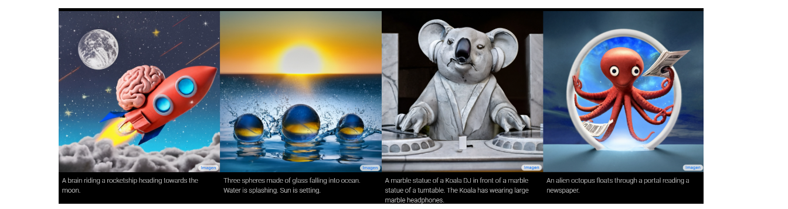

扩散模型的引入以及应用
强大的DALL-E 2被人质疑：不懂文本内关系，正确率仅有22%！ (qq.com)
扩散模型
OPEN-AI下的DALL-2
分析DALL-E2 能做和不能做的事情（在动作和实物分类方面仍然正确率不高，所以需要进一步改进）
可以用在小说中生成图片，或者作画以及大批量生成图形
让AI画画 | 大神复现OpenAI的Dall-E - 腾讯云开发者社区-腾讯云 (tencent.com)
OpenAI取消排队 DALL-E绘画AI可供所有人立即使用|应用程序|ai|dall_网易订阅 (163.com)
上边三条链接逐步体现出OPENAI的DALL-E2逐步实现内测-公测-全面推广，7月内测，9.30公开测试结束 全部开放

diffusion model 在故事生成视频方面的应用

下边是diffusion model 在图像生成方面的两个过程


应用：
图像超分辨率与修复
图像超分辨率是指从低分辨率(LR)图像中恢复高分辨率(HR)图像，而图像修补是指重建图像中缺失或破坏的区域。超分辨率扩散(SRDiff)[2]是第一个基于扩散的单幅图像超分辨率模型，该模型利用数据似然的变分界进行优化。SRDiff能够提供多样化和现实的超分辨率(SR)结果，通过逐步转换高斯噪声条件下的LR输入与马尔可夫链。重复细化超分辨率(SR3)[116]采用去噪扩散概率模型[23,25]进行条件图像生成，通过随机迭代去噪过程进行图像超分辨率。LDM[117]提出了潜在扩散模型，这是一种既提高了去噪扩散模型的训练效率和采样效率，又不损失质量的有效方法。为了帮助扩散模型使用有限的计算资源进行训练，同时保持质量和灵活性，LDM还利用预训练的自动编码器在潜在空间中利用它们。RePaint[118]设计了一种改进的去噪策略，通过重采样迭代来更好地调节图像。RePaint没有减慢扩散过程[119]，而是在扩散过程中前进和后退，产生有语义意义的图像。调色板[120]提出了一个基于条件扩散模型的统一框架，并对该框架进行了四项具有挑战性的图像生成任务[121]的评估，如着色、修复、取消裁剪和JPEG恢复。级联扩散模型(cascade Diffusion Models, CDM)[122]由级联的多重扩散模型组成，生成分辨率逐渐增加的图像。CDM能够在类条件ImageNet[123]生成基准数据集上生成高质量的图像，不需要任何来自辅助图像分类器的监督信息。多速度扩散(MSDiff)[124]产生了一种条件多速度扩散估计器(CMDE)，这是一种条件分数估计器，它结合了以往的条件分数估计方法[116,125]。
他们使用U-Net架构进行图像超分辨率实验
语义分割
语义分割是将图像中属于同一类别的部分聚类在一起。预训练可以提高语义切分模型的标签利用率，生成模型是一种替代预训练的方法。最近的一项研究[3]对最先进的DDPM[23]学习的表征进行了调查，并表明它们有能力捕捉对下游视觉任务有价值的高级语义信息。它开发了一种简单的方法，在少样本的操作点上利用这些学习到的表示，并显著优于包括VDVAE[126]和ALAE[16]在内的替代方法。受扩散模型成功的启发，学者们还研究了通过对自动编码器去噪学习到的表示在语义分割中的有效性[127]。解码器去噪预训练(Decoder去噪预训练，DDeP)[128]使用监督学习程序对编码器进行初始化，只在去噪目标引导下对解码器进行预训练。
从U-net的解码器(用于去噪过程)中获取不同尺度的特征映射(中间块)，并将它们连接起来(对特征映射进行上采样以获得相同的维度)，它们可以通过进一步附加多层感知器集成来对每个像素进行分类。
提出使用扩散概率模型进行图像分割。输入图像和当前估计图像经过两个不同的编码器，通过求和的方式组合在一起。然后将结果提供给U-Net的编码器-解码器。由于在每个时间步中都注入了随机噪声，对单个输入图像生成多个样本，并用于计算平均分割图。Unet架构基于之前的工作[6]，而输入功率生成器是用残差密集块(Residual density Blocks)构建的[147]。去噪样本发生器是一个简单的二维卷积层。
视频生成
在深度学习时代，由于视频帧的时空连续性和复杂性，高质量的视频生成仍然具有挑战性[4,5]。最近的研究求助于扩散模型来提高生成视频的质量。柔性扩散模型(Flexible Diffusion Model, FDM)[137]提出了一种新的基于DDPM的视频生成框架，可以在不同的现实场景下生成长期的视频补全。它引入了一个生成模型，可以在测试期间对视频帧的任意子集进行采样，并提出了一个为此目的设计的架构。受神经视频压缩研究进展的启发[138]，残差视频扩散(RVD)提出了一种自回归的端到端优化视频扩散模型。它通过反向扩散过程产生的随机残差来修正确定性的下一帧预测，从而连续生成未来帧。视频扩散模型(Video Diffusion Model, VDM)[139]引入了一种用于视频时空扩展的条件采样方法。它超越了之前提出的方法，并生成长、高分辨率的视频。
最近的进展使扩散模型更有效，使其在视频领域的应用成为可能。接下来我们将介绍将扩散模型应用于视频生成的工作。Ho等人[126]将扩散模型引入到视频生成任务中。与2D情况相比，更改只应用于体系结构。作者采用了[154]中的3D U-Net，给出了非条件和文本条件视频生成的结果。较长的视频以自回归的方式生成，其中后一个视频块以前一个视频块为条件。 Yang[127]使用扩散模型逐帧生成视频。反向过程完全取决于卷积递归神经网络提供的上下文向量。作者进行了消融研究，以确定预测下一帧的残差是否比预测实际帧的结果更好。 Hoppe等人[128]提出了一种可用于视频生成和填充的随机掩膜视频扩散(RaMViD)方法。他们工作的主要贡献是一种新的训练策略，即随机地将帧划分为掩模帧和非掩模帧。未掩模帧用于调节扩散，掩模帧通过正向过程进行扩散。 Harvey等人[125]的工作引入了灵活的扩散模型，这是一种可用于长视频生成的多种采样方案的扩散模型。如[128]所述，作者通过随机选择用于扩散的帧和用于调节过程的帧来训练扩散模型。在训练模型之后，他们研究了多种采样方案的有效性，得出的结论是，采样的选择取决于数据集
自然语言处理
自然语言处理是旨在理解、建模和管理人类语言的研究领域。文本生成也被称为自然语言生成，已经成为自然语言处理中最关键和最具挑战性的任务之一[140]。它的目标是在给定输入数据(如序列和关键字)或随机噪声的情况下，用人类语言生成可信和可读的文本。研究人员已经开发了许多用于文本生成的广泛应用的技术[141,142]。离散去噪扩散概率模型(D3PMs)[6]引入了用于字符级文本生成的类扩散生成模型[143]。他们通过超越具有统一转移概率的腐蚀过程，推广了多项扩散模型[144]。大型自回归语言模型(LMs)能够生成高质量的文本[90,145,146,147]。为了在实际应用中可靠地部署这些LM，文本生成过程通常是可控的。这意味着我们需要生成能够满足要求的文本(如主题、句法结构)。在文本生成中，不需要再训练就能控制语言模型(LMs)的行为是一个重要的问题[148,149]。尽管最近的研究在简单句子属性(如情感)的控制上取得了显著的成功[150,151]，但在复杂的、细粒度的控制(如句法结构)上却鲜有进展。为了解决更复杂的控制问题，Diffusion-LM[152]提出了一种基于连续扩散的新的语言模型。Diffusion-LM从一系列高斯噪声向量开始，逐级降噪成单词对应的向量。逐步去噪的步骤有助于产生分层连续的潜在表征。这种分层连续的潜在变量可以使简单的、基于梯度的方法实现复杂的控制。
综述汇总
最近大火的“扩散模型”首篇综述来了！北大最新《扩散模型:方法和应用》综述，23页pdf涵盖200页文献 (qq.com)
https://www.zhuanzhi.ai/paper/edf9ba1200e0740b307a923e23f4c96 (论文文章)
在这篇文章中，我们提出了扩散模型的现有变体的第一个全面的综述。具体地说，我们提供了扩散模型的第一个分类，并将它们的变体分为三种类型，即采样-加速增强、可能性-最大化增强和数据泛化增强。我们还详细介绍了其他五种生成模型(即变分自编码器、生成对抗网络、归一化流、自回归模型和基于能量的模型)，并阐明扩散模型和这些生成模型之间的联系。
这类模型由两个过程组成，第一个是通过在多个尺度上添加噪声来逐步干扰数据分布的正向过程，第二个是学习恢复数据结构的反向过程[23,25]。从这个角度看，扩散模型可以看作是破坏和恢复过程分别对应编码和解码过程。提高模型的性能可以看作是随机微分方程(SDE)的离散化，其中正向和反向过程对应着正向SDE和反向SDE。因此，通过SDE对扩散模型进行分析，可以提供密集的理论结果和模型改进，特别是在采样策略方面（采样加速增强、似然最大化增强和数据泛化增强）
五种常用的生成式模型**即变分自编码器、生成式对抗网络、归一化流、自回归模型和基于能量的模型**
计算机视觉[2,3,4,5]、自然语言处理[6]方面的应用进行了深入的研究,将阐明扩散模型的设计考虑和先进方法，介绍其在不同领域的应用，并为未来的研究指明方向
有三个子类别的扩散模型符合下边两个要求：
（1）前向扩散阶段，在这个过程中对输入数据添加高斯噪声，来逐步实现扰动；
（2）反向 / 后向扩散阶段的一类深度生成模型，在这个过程中，生成模型的任务是通过学习逐步反转扩散过程，从扩散（噪声）数据恢复原始输入数据
第一个子类别包括去噪扩散概率模型（DDPMs）denoising diffusion probabilistic models，其灵感来自非平衡热力学理论。DDPMs 是潜变量模型，采用潜变量来估计概率分布。从这个角度来看，DDPMs 可以被看作是一种特殊的变分自编码器（VAEs），其中正向扩散阶段对应于 VAE 内部的编码过程，而反向扩散阶段对应于解码过程。
第二个子类别的代表是噪声条件下的分数网络（NCSN） noise conditional score network，基于分数匹配机制训练得到一个共享的神经网络，用来估计不同噪声水平下扰动数据分布的分数函数（定义为对数密度的梯度）。
随机微分方程（SDEs）代表了另一种建立扩散模型的方式，形成了扩散模型的第三个子类别。通过正向和反向 SDEs 对扩散进行建模，可以得到有效的生成策略以及强有力的理论结果。第三种（基于 SDEs）可以被看作是对 DDPMs 和 NCSNs 的概括。
其他生成模型的对比 略